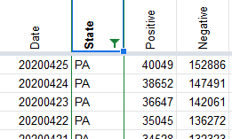
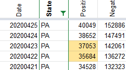

PA's Positive counts for April 22-23 may be incorrect
Issue number 347
sgdoerfler opened this issue on May 2, 2020 at 10:40 pm
Comparing the data shown in the Positive column here to the numbers shown in the accompanying screen shots, it appears the Positive column represents Pennsylvania’s total case counts, including both confirmed and probable cases.
However, on April 22nd, the table uses the figure 35045, which includes only confirmed cases, according to the screen shots, not probables. The correct figure that includes probables, and would match the other dates, is 35684. Both numbers appear on the screen shot. It appears the site just used the wrong one.
Then the next day, April 23rd, the table shows a Positive value of 36647. This doesn’t seem to appear on any of the screen shots for that day. The figure that does is 37053. So I think the Positive value for April 23rd also needs correcting.
Thanks for reporting this @sgdoerfler
We updated the positives number for 4/22 and 4/23 after checking the screenshots. You should see it reflected on the site this afternoon.
4/22 PA Screenshot Evening 4/23 PA Screenshot Evening
Before 
After 